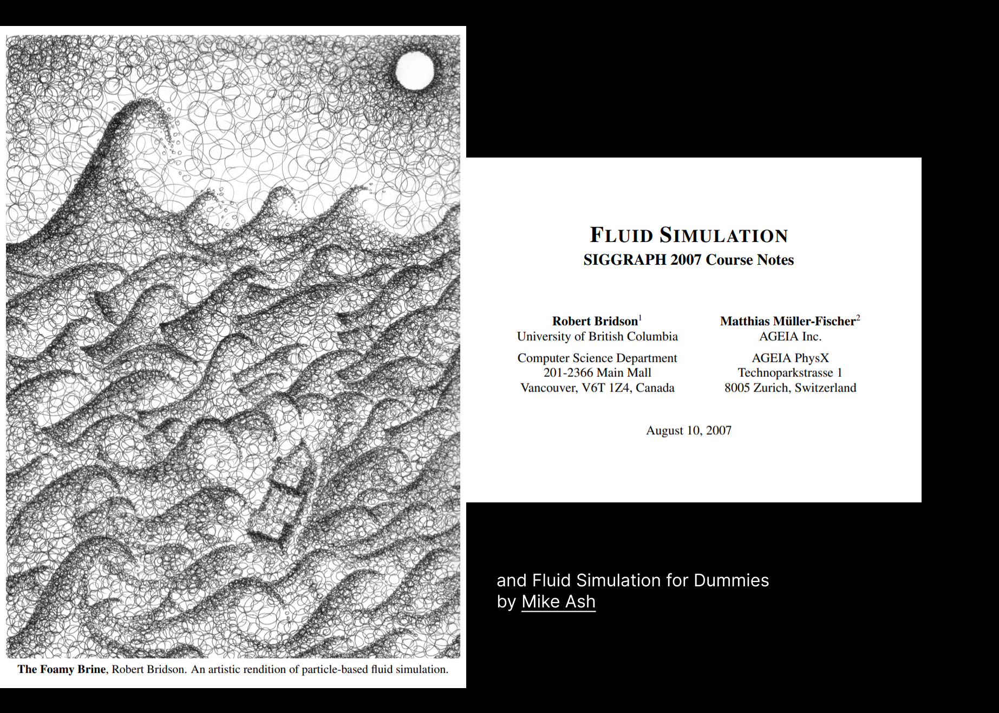
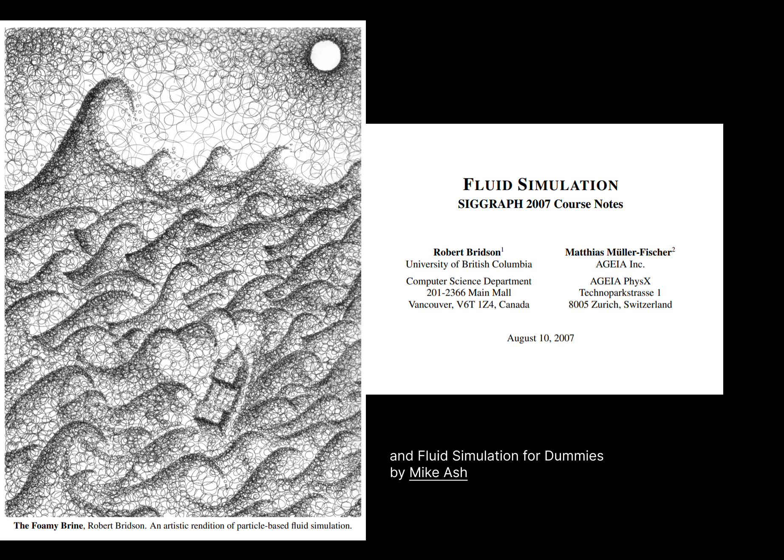

"Before the highway, the neighborhoods through which Moses would build the Cross Bronx were among the most racially integrated in the country, with large populations of Jewish immigrants from Eastern Europe, Irish and Italian Immigrants, (and after WWII) Puerto Ricans, and African-Americans. After the highway tore through, property values plummeted. White residents fled (lured to the suburbs by government-backed mortgages), while black and brown residents remained (oftentimes with few other options due to red-lining and racist housing policies). As covered in the documentary, Decade of Fire, subsequent disinvestment in services from the city led The Bronx to burn in the 70s and 80s, destroying roughly 80% of housing stock and displacing another 250,000."


FERAL AGENT
NOT A Human/Resident
The agent is not an individual person, household, or demographic group. It transcends individual human experience.
NOT Physical Infrastructure
Not a road, building, pipe, or tangible object. It exists in computational space as an abstraction.
IS A Digital Proxy
A computational representation of accumulated vulnerability that can be simulated, measured, and analyzed.
TECHNICAL FLOW
Input/Logic Layers
Core framework components and logic processing units.
Data Sources
Historical and real-time data inputs feeding the system.
Core Algorithms
Computational engines driving the analysis.
Processing Functions
Specialized functions for data transformation.
TECHNICAL PRECEDENTS
AGENT-BASED MODELING VISUALIZATIONS


 

Ternary Logic System
Implements a three-state logic system for agent decision making, allowing for more nuanced behavior representation.
State Transitions
Visual representation of how agents transition between different behavioral states based on environmental factors.
Decision Matrix
Shows the decision-making framework that guides agent behavior in different scenarios.